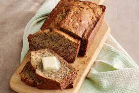

Banana Bread

Description
A moist, sweet, cake-like bread made from mashed bananas.
- Total: 1 hr 30 mins
- Cook: 1 hr 10 mins
- Prep: 20 mins
- Servings: 24
- Yield: 2 loaves
Nutrition Facts
- Per Serving: 258 calories
- Protein: 3.2 g
- Carbohydrates 40.5 g
- Fat 9.6 g
- Cholesterol 31 mg
- Sodium 214.1 mg
Ingredients
- 5 very ripe bananas
- 4 eggs
- 1 cup shortening
- 2 ½ cups white sugar
- 1 tablespoon vanilla extract
- 3 ½ cups all-purpose flour
- 2 teaspoons baking soda
- 1 teaspoon salt
Steps
-
Preheat oven to 300 degrees F (150 degrees C). Grease 2 - 9x5 inch loaf pans. In a medium bowl, mash bananas
and stir in the eggs until well blended. Set aside.
-
In large bowl, beat shortening and gradually add sugar. Stir in vanilla and banana mixture. Whisk together
flour, baking soda, and salt; blend into batter. Add walnuts if desired. Divide between the prepared pans.
-
Bake for 1 hour 15 minutes in the preheated oven, or until a toothpick inserted into the center of the loaf
comes out clean.